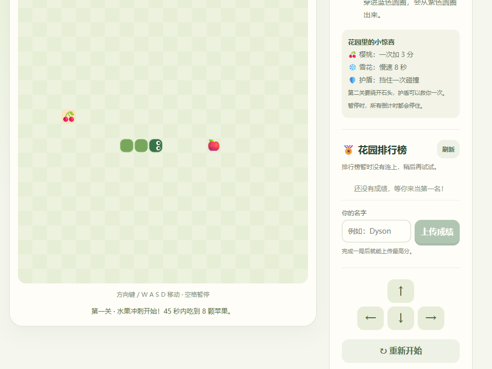
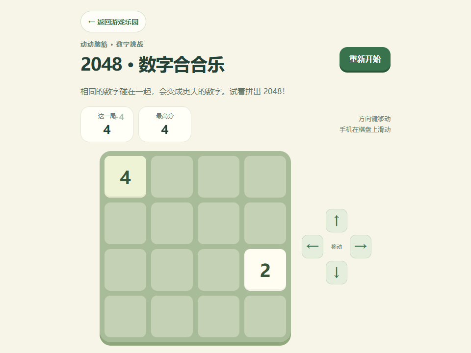
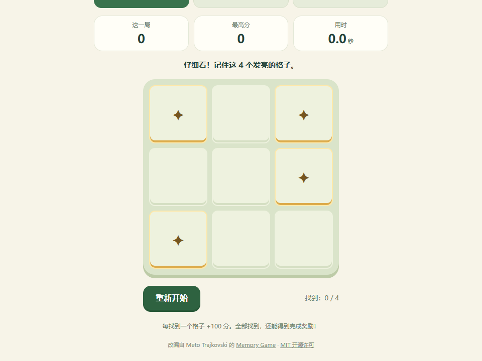
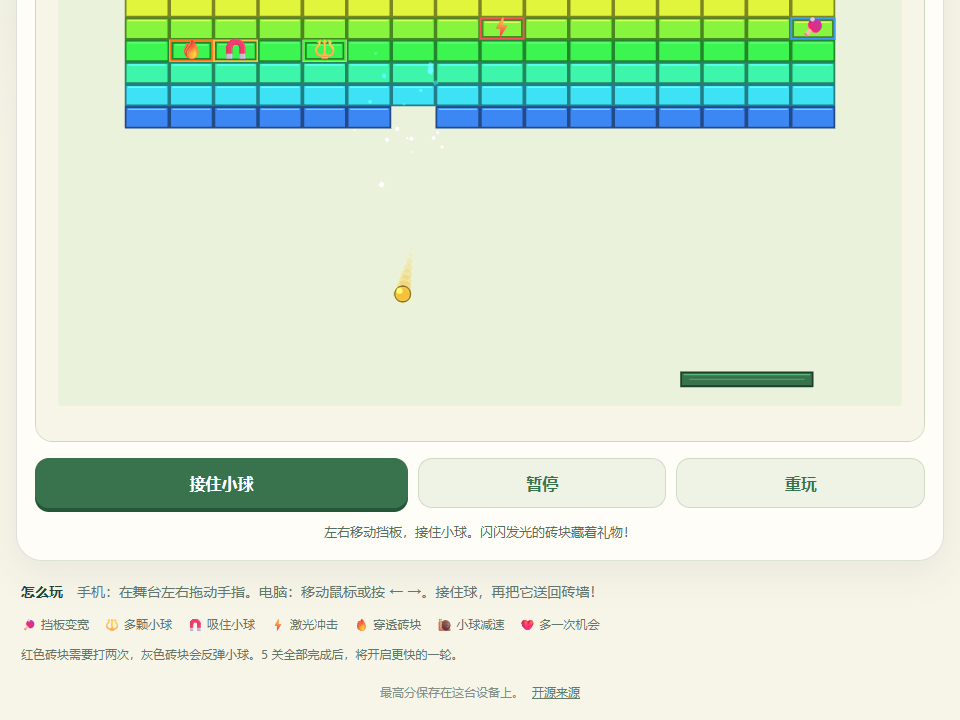

玩一局小游戏，画一个小世界。在这里，把喜欢的点子变成自己的作品。
拖拖积木，让小蛇找到苹果。
穿过花园，寻找水果和神奇传送门。
滑一滑，合并数字，拼出新的纪录。
记住亮格，再把它们一个个找出来。
接住小球，打掉彩色砖块，闯下一关。
把箱子推到圆点上，七个小关卡等你来。
先连成四枚就赢，可以和电脑或朋友下。
选颜色、画线条，贴上可爱的贴纸。画好了，收进你的小相册。
拼好方向和重复积木，让小蛇照着走。三条小路线，等你来挑战。
点亮格子，让鼓、沙沙铃和小星音一起演奏你自己的节奏。
一格一格涂上颜色，把小图案变成作品，还能收进相册。




小游戏、小画作和突然冒出来的想法，都有自己的小角落。
收藏、画板和相册连起来了，还有新的积木小路线。